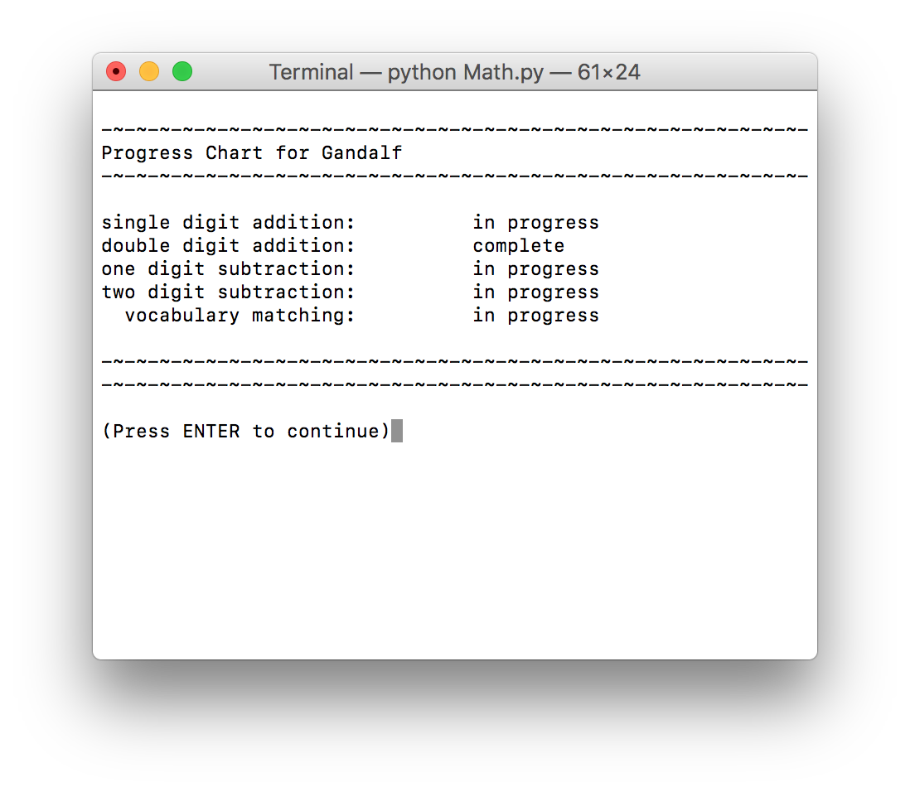

Introduction
When you first start to learn programming there are all sorts or mini projects they suggest you try, like finding all the primes up to ten thousand, or creating a scrabble (TM?) word finder. Here are some of my activities
When you first start to learn programming there are all sorts or mini projects they suggest you try, like finding all the primes up to ten thousand, or creating a scrabble (TM?) word finder. Here are some of my activities
I have a friend Amy who's an amazing and thoughtful artist. She's been working a series of paintings based on randomly assigning colors by rolling dice. You can see more of her work here.

As Amy described this very time consuming but personal process to me, I couldn't help but think that the whole thing could be streamlined by a few lines of code.
As I described my ideas to her, Amy was most interested in the easiest part of the program, assigning a number from one to six in each of the squares of a grid. Could I change the number of colors? Certainly! How about the size of the grid? Not a problem! She had almost no interest at all in what I saw as the crux of the project, turning the grid of numbers into a visual grid of colors. I had just recently learned how to use pygame, so most of the work was new to me.
For the sake of the art, it was important that not only should the color of each block be assigned randomly, but the order that the blocks are colored should also be random. My first solution, to start at the top left and work my way through in order to the bottom right, was unacceptable. My next solution, to pick a block randomly and assign it a color if it didn't already have a color, and to skip it if it did, was almost as bad. So my final project selects a block randomly from a list of unassigned blocks, assigns it a color, and draws it to the screen.
An unintended consequence of this round-about method is that the picture looks really cool while the program is running, and I hope I can figure out how to add it as a gif. If I wanted to find a moral from this story, I would say that by being careful about how the work is done, insead of focusing on the result, I created an even better project than I could have come up with on my own.
The idea for this project came from a student. Neither of us realized quite how difficult it was going to be. Eventually, we sat together after school and I figured out how to make the code work on the Arduino and then gave her hints and help until she figued it out too.
My student's project eventually identified a single letter based on button presses. Quite impressive considering the only coding she had ever done before was about a third of Codecademy's Python course!
But I wanted to see how far I could take things. My program now allows you to type a phrase of up to 12 letters. There is a backspace function, and the whole phrase displays on a LCD screen.
If I wanted to continue, I'd want a way to identify the current cursor position. This wasn't necessary at first, but once I added a backspace option it became less clear where the next character would appear.
It would also be nice to type more than one line. Even better would be to have a scrolling display, controlled by two more buttons on the side for "up" and "down".
The only punctuation at the moment is the exclamation point, becuase "hello world" seemed too lonely without it.
I've been distracted for the past while with this website, and some stats, and of course work stuff (most seniors finished school yesterday!), so it felt good to be working on a Python project after a too-long break.
This program has three options: two people can play, a person can play against an opponent that plays randomly, or a person can play against an opponent with a bit of intelligence.
I started out coding this using just the terminal window and displaying the board with the help of underscores, dashes, and whatever | is called (the "pipe"?)
But I had just written the beginnings of a "Space Invaders" program using the pygame module, and I wanted to try coding something with pygame from scratch.
I think it looks mighty fine, if I do say so myself. The images are all built in my favorite image editor: Power Point.

This was my first time programing anything with pictures. I followd the tutorial from Hello Bunny fairly closely, but there were still a lot of challenges to adapting it to space.
The left and right arrow keys move the launcher back and forth, and the up arrow key fires missiles at the invaders.
My next step is to add more aliens. For the six I have now, I actually told them to appear at pixel number n or m. Ideally, they'd figure out where they belong automatically. I first need to generalize the program to allow for more than six in a row, and then add more rows.
Alien number 4 is about to be blown from the sky!
The Euler Project is an archive of 600 puzzles (as of April 2017). Their puzzles require a combination of programming and creative thinking.
They were great for me as a developing programmer becuase they challenge both my coding skills and my creative thinking. Along the way, I learned new techniques in both Python and Ruby, such as how to read from or write to a file.
I've completed about 60 puzzles so far, and continue to go back to the archive when I need a change of pace or want to practice a new skill.
You can add as a friend using the key 936833_wBUW2XCdm83RN87tbykEDwRMpORG76kj
This is the sort of problem they have:
Not the most descriptive title, I know. If you can think ofanything better, send me a line!
I wanted to write a program that works like the Khan Academy. Students log in (or create an account) and then answer different types of math questions and track their progress.
Besides the logistical challenges of making my first big project, I also had to pick up some new skills, like Pickle (which has come in handy storing data for the later iPhone project).
When you first open the program it asks you for your name. If you've already played before (or someone else has your same name!) it'll prompt you for your password. If it's your first time it'll ask you to make a new password. As you can see, Gandalf has already played a bit before. I hope he remembers his password!
Once you're in, you have three options, to check progress, take a quiz, or save and exit.
If you chose to take a quiz, you'll have some options. Let's say you pick #2, double digit addition
Get three in a row to pass!
I think it's time to check out progress!
This was my first large project in Python. My favorite part of this program is it actually saves your id, password, and progress, so if you log back in you can pick up where you left off :) I used a Python module called Pickle to save the users progress so it wouldn't be lost even after the program closes.
Someone said "You should make a Scrabble word finder", so I said "Sure, why not?"

I clearly didn't spend as much time making this one look pretty.